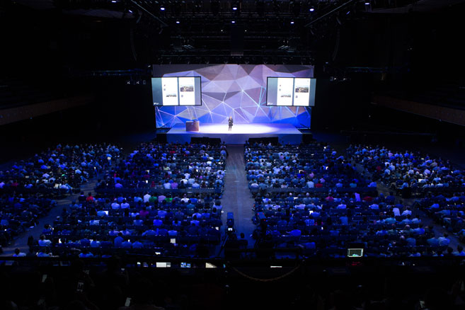

Flight 2015 Twitter developer conference on October 21th in San Francisco

I had the chance to attend to the Flight 2015 Twitter developer conference on October 21th in San Francisco.
About the conference Building a Customer Service Practice Using Twitter animate by JEFF LESSER :
As a brand, you should think about your users and focus on your audience. You have to offer a "Positiv Activ attitude".That mean that you always have to respond positive, offer a friendly interaction and always try to help the customer. People eventually calm down and feel silly face at their truculence. The Story Telling is a good way to communicate with customers.
Spotify use this method. The brand responds to questions by using title of songs ! What a funny way to communicate !
Concerning the using of tweets for your customer service, here is the method :
- First, list all the tweets of your customers.
- Create different sorts by topics and priorities them.
- Then you can process by DM replies thanks to the selection you have made.
What to do for a good customer service management using Twitter :
- Update frequently your statues.
- Post media and tutorials.
- Indicate the minimal waiting time for customers to get an answer from your brand.
What to do in case of bad comments from the customers :
- Answer to them as soon as possible.
- Create a story, and metamorphose the bad experience into something positive.
Download the slides of the conference
List of the other topics during the Flight 2015 Twitter developer :
Conferences in the Main Hall Session :- A Week in the Life of a Fabric Developer
- Growing and Monetizing Your App Using Twitter
- Building a Customer Service Practice Using Twitter
- Growing and Monetizing Your App Using Twitter
- Building a Customer Service Practice Using Twitter
- Telling Great Stories With Tweets
- Growing with Digits
- Up Periscope
Conferences in The Mobile Session :
- Building the Fabric SDKs
- A Deep Dive into the Answers Backend
- Rapid Development with Reliable Testing with Docker
- Building Mobile Applications for Unreliable Networks
- iOS Crash Reporting
- Twitter Adaptive UI
Conferences in the Data Sessions :
- Gnip: Twitter’s Enterprise API Suite
- A Discussion of Gnip's Newest Data Products
- Understanding Your Audience with Probabilistic Data Aggregation
- Building PowerTrack: Philosophy and Design
- What's in a Location
- Finatra: The Fast, Testable, Scala Framework Powering Twitter APIs
Lightning Theater Session : Of the Order of Billions: Building Observability at Twitter
- Protecting the Twitter Platform
- Hiring Great Engineers - The Fabric Way
- fastlane
- How the MoPub Marketplace Works
- How Fabric Builds Fabric
- Twitter’s Production Scale: Mesos and Aurora Operations
- Mapping Millions of Tweets
- Mobile Auth Services
- Android Developer Options: What can those toggles do for me?
- A Technical Deep Dive into NDK Crash Handling
- AMPlifying the Web
- High Performance Web Widgets
More information about Flight 2015 Twitter developer conference on : https://dev.twitter.com/flight/2015
Author : Eve-Rosemarie
Follow me